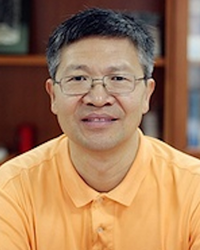
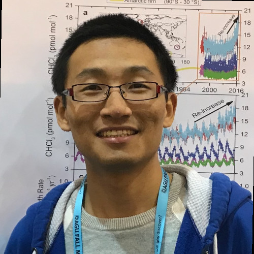

Advancing Land Modeling for Gulf Coast Resilience
August 14–15, 2025 | Austin, Texas (PRC Campus, UT Austin) & Virtual
Join us for a dynamic workshop hosted by The University of Texas at Austin to advance community-driven land modeling and foster partnerships addressing climate challenges in Texas and the Gulf Coast.
Why Attend?
- Tackle Critical Challenges: Collaborate on solutions for flooding, droughts, and extreme weather using Noah-MP, a flagship NSF NCAR land surface model.
- Build Partnerships: Engage with experts from academic institutions, federal/state/city agencies, and citizen groups.
- Drive Impact: Co-design predictive models for extreme events, prioritizing underserved communities and environmental justice.
- Advance Science: Enhance Noah-MP through participatory modeling, integrating high-resolution climate and hydrological data for policy-relevant outcomes.
Key Details
- Date: August 14–15, 2025
- Location: Austin, Texas (Venue: PRC Campus)
- Participants: ~60 attendees (in person) + online attendees.
- Activities: Interactive sessions, breakout discussions, and hands-on Noah-MP modeling workshops.
- Funded By: UCAR and Jackson School of Geosciences.
Registration Deadline: Please register by [Insert Deadline Date] to secure your spot.
Expected Outcomes
- Strengthen interdisciplinary collaboration across academia, agencies, and communities.
- Develop inclusive, community-driven solutions for climate resilience.
- Share results through open-access publications and a dedicated Python package for global researchers.
- Promote diversity in research perspectives and actionable policy insights.
Workshop Agenda
Day 1: Thursday, August 14, 2025
- 8:00 AM - 8:30 AM: Welcome & Opening Remarks - Dr. Zong-Liang Yang
- 8:30 AM - 10:30 AM: Session 1 – Extreme Weather and Events
- 10:45 AM - 12:00 PM: Session 2 – Subseasonal-to-Seasonal Prediction
- 1:00 PM - 3:00 PM: Session 3 – AI/ML Integration with Physical Land/Hydro Models
- 3:15 PM - 6:00 PM: Session 4 – Community Engagement and Stakeholder Partnership
- 6:00 PM - 8:00 PM: Dinner & Evening Keynote (Texas Parks and Wildlife)
Day 2: Friday, August 15, 2025
- 8:00 AM - 8:15 AM: Day 2 Welcome – Dr. Soe Win Myint
- 8:15 AM - 10:15 AM: Session 5 – Urban Modeling
- 10:30 AM - 12:00 PM: Session 6 – NoahMP Application in Hydrology
- 1:00 PM - 3:00 PM: Session 7 – Datasets for Regional Resilience
- 3:15 PM - 4:45 PM: Session 8 – Policy-Driven Model Development & Application
- 4:45 PM - 6:00 PM: Session 9 – Synthesis & Future Directions
- 6:00 PM - 8:00 PM: Dinner & Final Closing Remarks
Organizers

Dr. Zong-Liang Yang
UT Austin
Lead Organizer

Dr. Soe Win Myint
Texas State University
Co-Organizer

Dr. Cenlin He
NCAR
Workshop Co-Lead